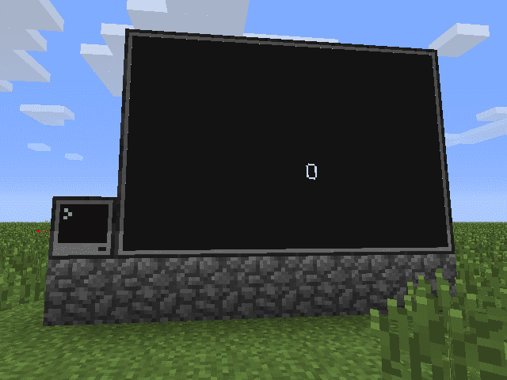
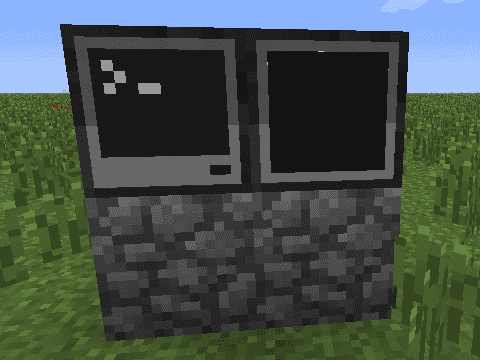
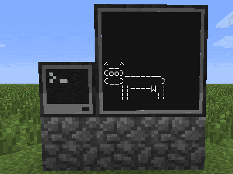
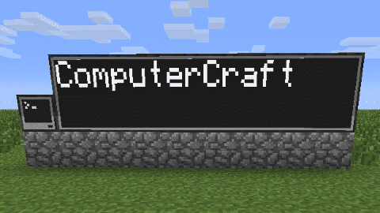

Nå skal vi lære hvordan vi kan koble en skjerm til datamaskinen. Med
en ekstra skjerm kan vi bruke datamaskinen til å kommunisere med
verden rundt oss. Kanskje Minecraft-verden blir fyllt med store
reklamebannere?

Steg 1: Koble en skjerm til datamaskinen
La oss som vanlig begynne helt enkelt. La oss koble en skjerm til en
datamaskin og se om vi får til å skrive noe på skjermen.
Sjekkliste

La oss for eksempel prøve programmet hello. Dette er et enkelt
program som vi såvidt har sett litt på tidligere. Det skriver bare
teksten Hello World!. Kjør først programmet på datamaskinen:
> hello
Hello World!
Nå kan vi prøve å få dette til å kjøre på skjermen. Med skjermen
koblet til på høyre (right) side av datamaskinen (som på bildet
over) skriver vi bare
> monitor right hello
Du kan nå trykke Esc for å gå ut av datamaskinen og se på
skjermen. Står det Hello World!?
Det er ikke så farlig om din ku ikke ser ut akkurat som her. Du
kan også gjerne tegne noe helt annet. Vi vil bare teste at også
vårt eget program kan skrives på skjemen.

Cowsay
Denne kuen er basert på et morsomt lite program som heter Cowsay,
og som ble laget av Tony Monroe på slutten av 1990-tallet. En
web-variant av programmet finnes nå på
http://cowsay.morecode.org/.
Steg 2: En annen metode
I stedet for at vi bruker monitor-programmet for å skrive til
skjermen kan vi skrive direkte til skjermen i programmer vi selv
lager. Dette er ganske enkelt med et bibliotek som heter peripheral
(peripheral betyr i denne sammenhengen tillegg, altså skjermen er
et tillegg til datamaskinen).
Som vanlig kan du bytte ut right med for eksempel left eller
top om du har plassert skjermen annerledes.
local skjerm = peripheral.find("monitor") -- endret linje
skjerm.write("Heisann!")
local skjerm = peripheral.find("monitor")
if skjerm then-- ny linje
skjerm.write("Heisann!")
else-- ny linjeprint("Ingen skjerm er koblet til") -- ny linjeend-- ny linje
Prøv å kjør dette nye programmet. Det kan hende du vil gjøre
monitor right clear innimellom for å tømme skjermen. Prøv også å
koble fra (ødelegge) skjermen. Får du melding om at ingen skjerm
er koblet til når du prøver å kjøre programmet ditt?
Steg 3: En ball faller over skjermen
Vi skal nå begynne på en enkel animasjon som vi kan kjøre på skjermen.
Sjekkliste
local skjerm = peripheral.find("monitor")
if skjerm then
skjerm.clear()
skjerm.write("O")
elseprint("Ingen skjerm er koblet til")
end
Dette skal tegne en ball øverst på skjermen.
local skjerm = peripheral.find("monitor")
if skjerm thenforrad = 1, 10do-- ny linje
skjerm.clear()
skjerm.setCursorPos(3, rad) -- ny linje
skjerm.write("O")
sleep(1) -- ny linjeend-- ny linjeelseprint("Ingen skjerm er koblet til")
end
For at vi skal rekke å se at ballen flytter seg har vi lagt inn en
sleep-kommando som bare venter litt (1-tallet betyr 1 sekund)
mellom hver gang ballen flyttes.
functiontegnBall(skjerm)-- ny linjeforrad = 1, 10do-- flyttet linje
skjerm.clear() -- flyttet linje
skjerm.setCursorPos(3, rad) -- flyttet linje
skjerm.write("O") -- flyttet linje
sleep(1) -- flyttet linjeend-- flyttet linjeend-- ny linje
skjerm = peripheral.find("monitor")
if skjerm then
tegnBall(skjerm) -- ny linjeelseprint("Ingen skjerm er koblet til")
end
Steg 4: Hvor stor er skjermen
En liten utfordring med skjermer er at de kan ha forskjellig
størrelse. Hvis du for eksempel setter tre skjermer oppå hverandre
slik at du får en veldig høy skjerm vil ikke ballen i
sprettball-programmet ditt falle helt til bunnen av skjermen. Dette
kan vi løse ved å bruke funksjonen getSize.
Nå vil vi få ballen til å oppføre seg mer som en sprettball. For å få
til dette vil vi innføre noen nye variabler. Vi vil la X og Y
betegne hvor ballen er, mens fartX og fartY forteller hvor fort
ballen flytter på seg.
Sjekkliste
functiontegnBall(skjerm)local bredde, hoyde = skjerm.getSize()
local X, Y = 1, 2-- ny linjelocal fartX, fartY = 1, 1-- ny linjewhiletruedo-- endret linje
skjerm.clear()
skjerm.setCursorPos(X, Y) -- endret linje
skjerm.write("O")
sleep(1)
X = X + fartX -- ny linje
Y = Y + fartY -- ny linjeendend
Ballen vil nå bevege seg på skrå over skjermen. Ser du hvorfor?
functiontegnBall(skjerm)local bredde, hoyde = skjerm.getSize()
local X, Y = 1, 2local fartX, fartY = 1, 1whiletruedo
skjerm.clear()
skjerm.setCursorPos(X, Y)
skjerm.write("O")
sleep(1)
X = X + fartX
Y = Y + fartY
if X <= 1or X >= bredde then-- ny linje
fartX = -fartX -- ny linjeend-- ny linjeif Y <= 1or Y >= hoyde then-- ny linje
fartY = -fartY -- ny linjeend-- ny linjeendend
Spretter ballen tilbake når den treffer kanten av skjermen? Lag
gjerne en ganske stor skjerm. Du kan også endre pausen mellom hver
gang ballen flytter seg. For eksempel bytt ut sleep(1) med
sleep(0.1).
functiontegnBall(skjerm)local bredde, hoyde = skjerm.getSize()
local X, Y = 1, 2local fartX, fartY = 1, 0-- endret linjelocal gravitasjon = 0.2-- ny linjewhiletruedo
skjerm.clear()
skjerm.setCursorPos(X, Y)
skjerm.write("O")
sleep(0.1)
fartY = fartY + gravitasjon -- ny linje
X = X + fartX
Y = Y + fartY
if X <= 1or X >= bredde then
fartX = -fartX
endif Y >= hoyde then-- endret linje
fartY = -(fartY + gravitasjon) -- endret linjeendendend
Vi endret også litt i sjekken om Y er slik at ballen skal
sprette, siden gravitasjonen gjør at vi ikke trenger å sprette i
taket lengre.
Steg 6: Reklamebanner
Vi tar nå en liten pause fra sprettballen vår for å se på hvordan vi
kan bruke skjermene til å lage enkle tekstplakater eller
reklamebannere.
Sjekkliste
local skjerm = peripheral.find("monitor")
if skjerm then
skjerm.clear()
skjerm.setCursorPos(1, 1)
skjerm.write("ComputerCraft")
elseprint("Ingen skjerm er koblet til")
end
Kjør programmet. Skriver det til skjermen som det skal?
For skjermer kan vi bruke setTextScale for å endre
tekststørrelsen. Legg til linjen
skjerm.setTextScale(3)
rett før linjen skjerm.clear(), og kjør programmet ditt på nytt.
Ble teksten større?

Tallet 3 i setTextScale(3) indikererer størrelsen på
teksten. Her kan vi bruke tall mellom 0.5 og 5, hvor 5 gir oss den
største mulige teksten. Etter at vi har brukt setTextScale må vi
bruke clear før tekststørrelsen blir oppdatert.
En måte å gjøre dette på er å lage en løkke hvor vi tester alle
tekststørrelsene fra størst til minst, helt til vi finner en
størrelse hvor all teksten får plass på skjermen.
Skjønner du hvordan denne koden fungerer? Vi bruker noen nye triks
her som du kanskje ikke har sett før.
Tegnet # brukes for å telle ting. For eksempel betyr #tekst
rett og slett bare antall tegn i (lengden av) tekst. Dette må vi
vite når vi senere skal sjekke om skjermen er stor nok.
I for-løkken bruker vi tre tall i stedet for to som vanlig. Det
siste tallet, i dette tilfellet -0.5 bestemmer hvor store steg vi
tar i løkken. Siden vi her ville telle ned fra 5 til 0.5 må vi
bruke et negativt steg.
Til slutt, break sier at vi vil avslutte for-løkken før den
egentlig er ferdig. Dermed avslutter vi letingen etter
tekststørrelser når vi finner en som passer. Tidligere har vi
brukt break for å for eksempel avslutte skattejakt når man
fant skatten.
local tekst = "ComputerCraft"local skjerm = peripheral.find("monitor")
if skjerm then
brukStorTekst(skjerm, tekst)
skjerm.setCursorPos(1, 1)
skjerm.write(tekst)
elseprint("Ingen skjerm er koblet til")
end
Prøv selv
Det er flere måter å gjøre reklame-programmet enda bedre på. Her er
to forslag:
Kan du midtstille teksten på skjermen? Du må da endre tallene i
setCursorPos ut ifra lengden på teksten og størrelsen på skjermen.
Om du endrer størrelsen på skjermen blir teksten borte. Vi kan heller
få teksten til å bli skrevet i ny og riktig størrelse når skjermen
blir endret. Du kan bruke os.pullEvent til å lytte på hendelser som
heter monitor_resize og skrive teksten på nytt når disse skjer.
Steg 7: En skikkelig ticker!
Dessverre er det en begrensning på hvor stor en skjerm kan være. Du
kan maksimalt sette sammen 8 x 6 skjermer til en stor skjerm. Dette
begrenser hvor lange tekster vi kan skrive, ihvertfall om vi vil bruke
stor og godt synlig tekst.
Et alternativ for lengre tekster er å bruke en ticker, hvor vi
animerer teksten slik at den ruller over skjermen.
Sjekkliste
local tekst = "Jeg er en lang tekst. Bytt meg gjerne ut!"local skjerm = peripheral.find("monitor")
if skjerm then
skjerm.setTextScale(5)
skjerm.clear()
skjerm.setCursorPos(1, 1)
skjerm.write(tekst)
elseprint("Ingen skjerm er koblet til")
end
Her setter vi bare størrelsen på teksten fast til 5, siden vi
vil bruke så stor tekst som mulig. Hva skjer når du kjører dette
programmet?
local tekst = "Jeg er en lang tekst. Bytt meg gjerne ut!"local skjerm = peripheral.find("monitor")
if skjerm then
skjerm.setTextScale(5)
skjerm.clear()
local bredde, hoyde = skjerm.getSize() -- ny linjelocal deltekst = string.sub(tekst, 1, bredde) -- ny linje
skjerm.setCursorPos(1, 1)
skjerm.write(deltekst) -- endret linjeelseprint("Ingen skjerm er koblet til")
end
I linjen string.sub(tekst, 1, bredde) sier vi at vi vil ta ut en
deltekst fra tekst fra tegn nummer 1 til tegn nummer
bredde. Prøv å endre på disse tallene for å se effekten, slik at
du skjønner hvordan denne funksjonen virker.
local tekst = "Jeg er en lang tekst. Bytt meg gjerne ut!"local skjerm = peripheral.find("monitor")
if skjerm then
skjerm.setTextScale(5)
skjerm.clear()
local bredde, hoyde = skjerm.getSize()
local lengde = #tekst -- ny linjefor i = 0, lengde - bredde do-- ny linjelocal deltekst = string.sub(tekst, i+1, i+bredde)
-- deltekstlinjen er endret
skjerm.setCursorPos(1, 1)
skjerm.clear() -- ny linje
skjerm.write(deltekst)
end-- ny linjeelseprint("Ingen skjerm er koblet til")
end
Skjønner du hvordan tellevariabelen i virker? Enkelt sagt teller
den hvor langt fra det første tegnet i teksten vi har kommet.
Hvor mye luft vi legger på vil ideelt sett avhenge av hvor stor
skjermen er. Til dette kan vi bruke string.rep som kan repetere
tekststrenger. For eksempel er string.rep("Hei", 4) det samme
som HeiHeiHeiHei. Vi kan legge på litt luft rundt teksten før vi
begynner å animere den.
local tekst = "Jeg er en lang tekst. Bytt meg gjerne ut!"local skjerm = peripheral.find("monitor")
if skjerm then
skjerm.setTextScale(5)
skjerm.clear()
local bredde, hoyde = skjerm.getSize()
local luft = string.rep(" ", bredde) -- ny linje
tekst = luft .. tekst .. luft -- ny linjelocal lengde = #tekst
whiletruedofor i = 0, lengde - bredde dolocal deltekst = string.sub(tekst, i+1, i+bredde)
skjerm.setCursorPos(1, 1)
skjerm.clear()
skjerm.write(deltekst)
sleep(0.2)
endendelseprint("Ingen skjerm er koblet til")
end
Pass på at det er et mellomromstegn i string.rep(" ", bredde).
Forbedre denne siden
Funnet en feil? Kunne noe vært bedre? Hvis ja, vennligst gi oss tilbakemelding ved å lage en sak på Github eller fiks feilen selv om du kan. Vi er takknemlige for enhver tilbakemelding!
 Sprettball
Sprettball Sjekkliste
Sjekkliste